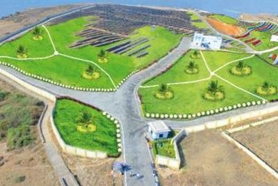
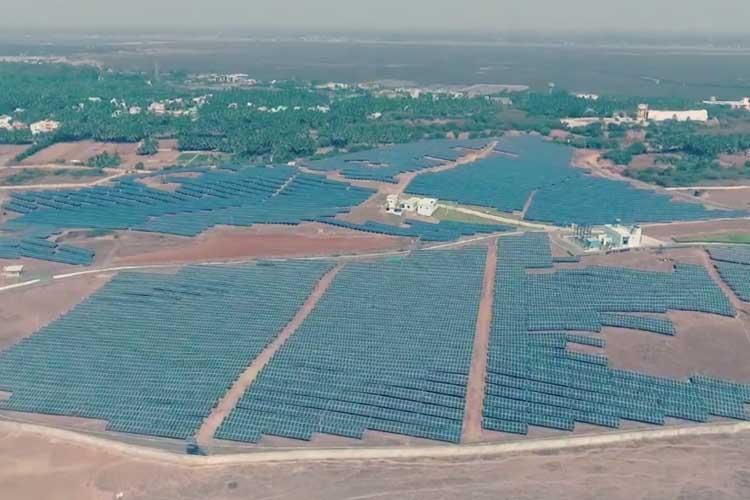

Commonwealth Games 2018: India’s medals tally

SURAT: The harnessing of solar energy has made Diu the country’s first energy surplus Union territory and a model for an effective way for people to harness this renewable energy source.
In just three years, Diu has made rapid progress in solar power generation. The Union territory has an area of just 42 square kilometres. Despite scarcity of land, solar power plants have been installed over more than 50 acres.
Diu generates a total of 13 megawatts of electricity from solar pow ..Diu becomes first UT to run 100% on solar powerShowing a marked shift from using expensive non-renewable energy sources, Diu has become the first Union Territory in India to run 100 percent on solar power generated energy.
As reported by The Times of India, Diu has managed to generate surplus solar power for its residents, reducing their electricity costs, in a span of just three years.
Diu, which is one of the least populated territories in India, marking an area of 42 square kilometers, has witnessed the installation of solar power plants in over more than 50 acres of its land, the report adds.
As per the report, Diu now generates a total of about 13 megawatts of electricity from solar power generating facilities on a daily basis.
Also Read: As Solar Energy Price Falls, Indian Manufacturers Lose to China
Of this, about 3 megawatts is generated by the rooftop solar plants, while the other 10 megawatts is produced by other solar power plants.
Three years ago, Diu residents relied on electricity generated from a power grid that was owned by the Gujarat government. This meant huge line losses and expensive tariffs, reports News World India. However, the report mentions that once the local company began to generate and supply electricity from the solar energy power plants, electricity losses were significantly reduced.
Also Read: Sorry, Siddaramaiah, That Solar Park is in Germany, Not Karnataka
Milind Ingle, the electricity department executive engineer of Daman and Diu, told The Times of India that the Union Territory decided to set up the solar power plants in a bid to overcome the limitation of having to solely depend on the Gujarat government for water and electricity.
Diu’s peak-time demand for electricity goes up to 7 megawatts and we generate about 10.5 megawatts of electricity from solar energy daily. This is way more than the consumption demand requirement.
Milind Ingle told Times of India
Also Read: Solar Panels Over Canals May Help India Combat Climate Change
As a result of this surplus electricity from the solar power plants, the monthly costs of local households have fallen by 12 percent, Ingle added.
As reported by The Times of India, the residents would have to pay Re 1.20 per unit for using between 0-50 unites and Re 1.50 per unit for 50-100 units.
Also Read: Solar Light Cleaner and Cheaper, yet India Subsidises Kerosene
However, once the solar power plants were set up and began generating electricity, the Joint Electricity Regulatory Commission for Goa and the Union territories removed the 0-50 units slab and revised the per unit charge for using between 1-100 units, to Re 1.01 per unit.

Also Read: Sorry, Siddaramaiah, That Solar Park is in Germany, Not Karnataka
Milind Ingle, the electricity department executive engineer of Daman and Diu, told The Times of India that the Union Territory decided to set up the solar power plants in a bid to overcome the limitation of having to solely depend on the Gujarat government for water and electricity.
Diu’s peak-time demand for electricity goes up to 7 megawatts and we generate about 10.5 megawatts of electricity from solar energy daily. This is way more than the consumption demand requirement.
Milind Ingle told Times of India
Also Read: Solar Panels Over Canals May Help India Combat Climate Change
As a result of this surplus electricity from the solar power plants, the monthly costs of local households have fallen by 12 percent, Ingle added.
As reported by The Times of India, the residents would have to pay Re 1.20 per unit for using between 0-50 unites and Re 1.50 per unit for 50-100 units.
Also Read: Solar Light Cleaner and Cheaper, yet India Subsidises Kerosene
However, once the solar power plants were set up and began generating electricity, the Joint Electricity Regulatory Commission for Goa and the Union territories removed the 0-50 units slab and revised the per unit charge for using between 1-100 units, to Re 1.01 per unit.
Ads

We can add 'ads' over here..
putting the ads in the side bar gives max
chance of clicking on ad.
 India launches another navigation satellite as part of home grown GPS
India launches another navigation satellite as part of home grown GPS Mumbai: City can become smart only when roads are pothole-free, says HC
Mumbai: City can become smart only when roads are pothole-free, says HC Modi rejects allegations over 15th Finance Commission
Modi rejects allegations over 15th Finance Commission